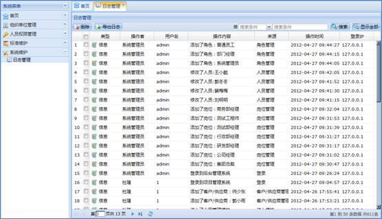

超级用户可以通过日志管理模块查看操作日志和系统日志。操作日志是用户对项目操作的记录，换而言之，就是对前台操作的记录。系统日志是超级用户对系统操作的记录，换而言之，就是对后台操作的记录。用例如下图所示：
在系统菜单里选择系统维护日志管理，工作区会显示日志管理模块信息，如下图所示：

图 日志管理界面
1、删除日志
（1）删除一条日志：在日志列表中选择一条日志，通过工具栏的“删除”按钮或右键菜单的“删除日志”删除。
（2）批量删除日志：在日志列表中选中多条日志，通过工具栏中的“删除”按钮删除。
2、导出日志
在日志列表中选中一条或多条日志，通过工具栏的“导出日志”按钮导出。
在日志列表工具栏选择“搜索条件”，填写“搜索条件”最后选择“搜索”按钮搜索。
搜索日志之后显示的是和搜索条件相符合的日志，是部分日志。此时通过工具栏的“显示全部”按钮可以显示全部日志。